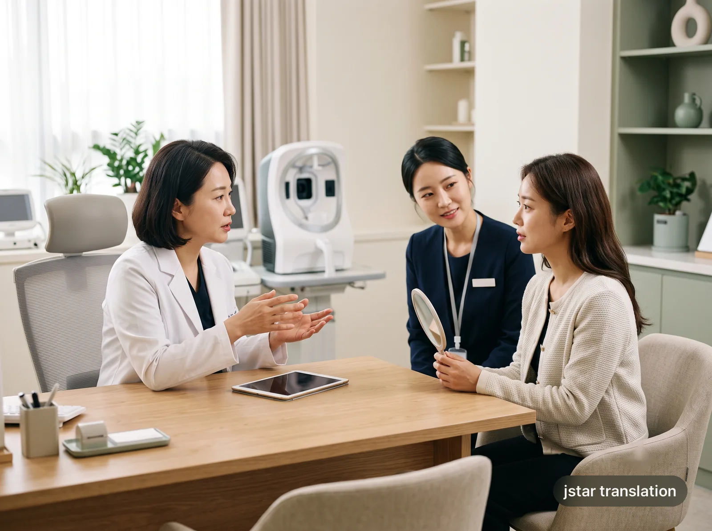

가격 오해
포함·불포함이 다르게 전달되어 결제 자리에서 말이 달라집니다.
중국 손님이 오는 날,
목적을 돕는 통역사를
불러 주세요.
번역 앱으로 상담하다가 손님이 그냥 돌아간 적, 있으시죠?
의뢰 전 무료 사전 상담을 신청해 보세요. 답장 08:30~20:30

WHAT'S AT STAKE
말이 반만 통하면 아래와 같은 일이 생길 수 있습니다.
포함·불포함이 다르게 전달되어 결제 자리에서 말이 달라집니다.
시술 후 관리, 환불 규정처럼 꼭 전해야 할 말이 빠집니다.
귀국한 뒤 항의와 나쁜 후기로 돌아옵니다.
WHAT WE DO
업종과 날짜, 장소를 알려 주시면 맞는 통역사를 배정합니다.

상담, 동의서 설명, 수술 전후 안내, 재진까지 의료진의 설명을 그대로 옮깁니다.
퍼스널컬러 진단 용어, 헤어 길이와 색, 메이크업·촬영 요청을 정확히 전합니다.
바이어 미팅, 수출상담회, 공장 방문, 계약 자리의 순차 통역.
VIP 손님의 전 일정을 한 명의 통역사가 수행합니다.
| 중국어 직원 채용 | 번역 앱 | 통역사 호출 | |
|---|---|---|---|
| 비용 | 매달 고정 | 거의 없음 | 부른 시간만큼 |
| 맞는 경우 | 중국 손님이 매일 올 때 | 길 안내, 간단한 인사 | 상담·동의·계약처럼 틀리면 안 될 때 |
| 준비 | 채용·교육 기간 | 없음 | 자료를 미리 보내면 읽고 감 |
| 확인 | 직원 역량에 따라 | 확인하기 어려움 | 상담 때·진행 전·결제 전 세 번 |
OUR APPROACH
통역은 양쪽이 충분히 이해하고, 원하는 목적을 이루게 하는 일입니다.
의뢰인의 목적을 돕되, 양쪽의 말을 사실 그대로 옮깁니다.
내용과 비용을 상담 때, 진행 전, 결제 전 세 번 확인해 합의한 그대로 결제되게 합니다.
끝난 뒤 생기는 간단한 추가 문의는 현장을 아는 담당 통역사가 이어서 돕습니다.
통역은 사람의 언어입니다. 양쪽이 충분히 이해해야 목적을 이룹니다.
HOW IT WORKS
업종, 날짜, 장소만 먼저 알려 주세요. 가능한 통역사와 비용을 먼저 확인해 드립니다.
업종 · 날짜 · 장소 · 손님 인원
범위와 비용을 먼저 안내
끝난 뒤 간단한 추가 문의까지
개인정보, 진료 정보와 현장 대화는 비밀유지 원칙에 따라 이번 서비스 진행 목적으로만 처리합니다.
의료진의 설명을 있는 그대로 전하며 더하거나 미화하지 않습니다.
통역사는 의료 조언을 하지 않으며, 결정은 손님과 업체가 합니다.
범위와 견적을 확인한 뒤 서비스를 시작합니다.
시간당 3만원부터
최소 3시간
별도 협의
요일·시간을 정해 두고 부르는 방식
견적
전시회, 상담회, 촬영, VIP 수행
세금계산서 발행 가능 · 순차 통역 전문(동시통역은 하지 않습니다) · 서울 전역
한국 유학 뒤 정착해 2007년부터 통역 현장을 지켜 온 현업 의료통역사입니다. 2015년 중국 방문단의 지방정부 방문 때 시장 수행 통역을 맡았고, 병원 상담실과 기업 미팅 현장을 오가고 있습니다.
대표 통역사와 협력 통역사 3명이 함께하며, 같은 날 최대 5명까지 배정할 수 있습니다.
SELECTED SCENARIOS
현장에서 자주 맡는 상황입니다.

접수 과정에서 시술 항목이 손님이 원한 것보다 많은 용량으로 잘못 적힌 것을, 결제 전에 찾아 바로잡은 일이 있습니다. 세 번 확인하는 이유입니다.
핵심: 결제 전 재확인
손님이 충분히 이해하고 스스로 결정하도록 양쪽의 말을 정리해 드립니다.
핵심: 이해한 뒤 결정
현장을 아는 담당 통역사가 간단한 문의는 이어서 돕습니다.
핵심: 책임통역병원·의원 상담과 동의서 설명, 뷰티샵 상담, 바이어 미팅과 전시회, VIP 수행까지 순차 통역으로 지원합니다.
시간, 장소와 진료과를 먼저 보내주시면 가능한 통역사를 우선 확인합니다. 실제 배정 여부는 당일 일정에 따라 달라질 수 있습니다.
시간당 3만원부터이며 최소 3시간입니다. 시간, 장소, 난이도, 사전 자료 준비에 따라 견적을 안내하고 확인 후 진행합니다. 장기 계약은 별도로 협의합니다.
중국 손님이 매일 온다면 채용이 맞습니다. 손님이 오는 날이 정해져 있거나 들쭉날쭉하다면 필요한 날만 부르는 편이 부담이 적습니다.
길 안내나 인사는 앱으로 충분합니다. 가격, 용량, 동의, 계약처럼 틀리면 손해가 생기는 내용은 양쪽이 같은 뜻으로 이해했는지 현장에서 확인할 사람이 필요합니다.
통역사는 비밀유지 원칙을 준수하며 개인정보와 진료 내용은 서비스 배정과 현장 소통 목적으로만 사용합니다.
아니요. 통역사는 정확한 전달만 담당하며 의료 조언을 하거나 의료진·고객을 대신해 결정하지 않습니다. 치료와 비용은 고객과 의료진이 결정합니다.
진단서, 검사 결과, 동의서, 수술 후 안내 등의 중한 번역을 지원합니다. 문서 종류와 페이지 수를 먼저 보내주세요.
발행 가능합니다.
간단한 추가 문의는 현장을 아는 담당 통역사가 이어서 돕습니다(책임통역).
START A CONVERSATION
업종 / 날짜 / 장소를 문자로 보내 주시면 가능한 통역사와 비용을 먼저 확인해 드립니다. 답장 08:30~20:30.
휴대폰에서 누르면 바로 연결됩니다.
cmdlabkr@gmail.com 손님께 드리는 「진료 전 질문 체크리스트」(PDF)추신. 중국 마케팅 상담도 함께 원하시면 문자에 적어 주세요.